ホタル（Firefly） / 2017
 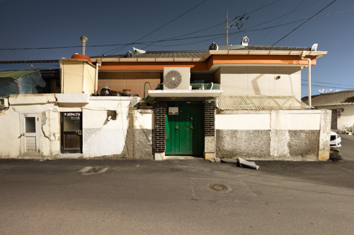
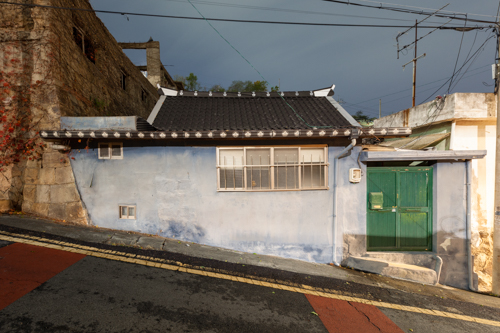
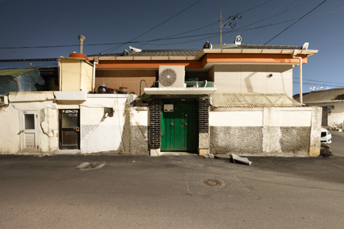
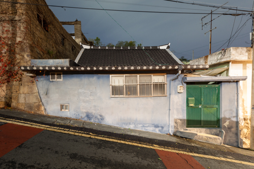

 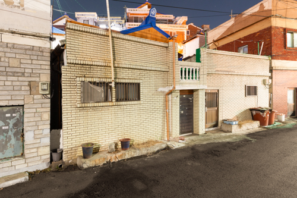
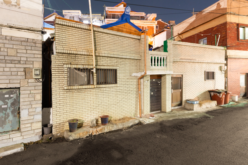
 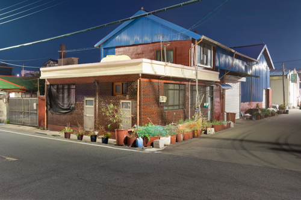
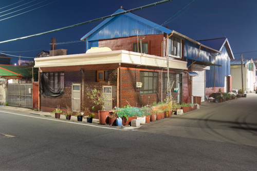
 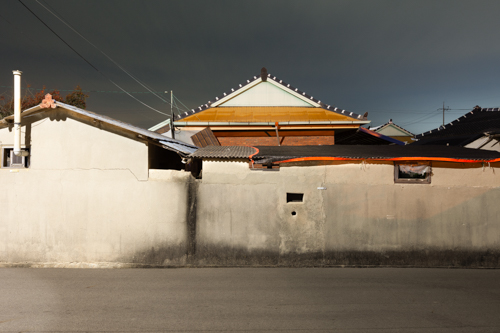
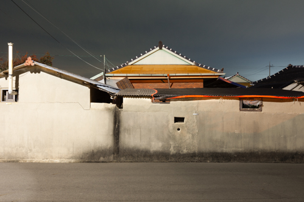

 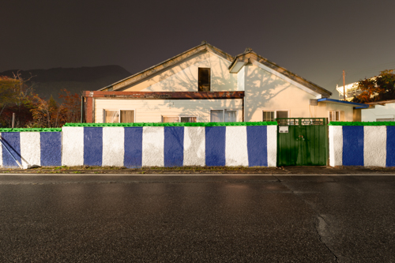
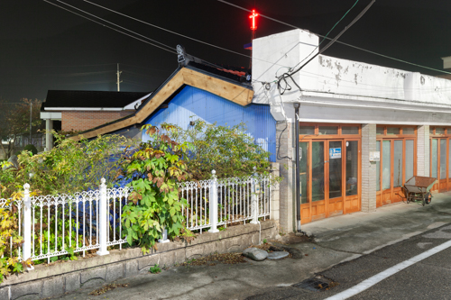
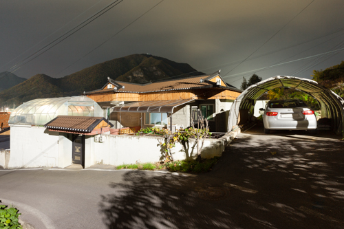
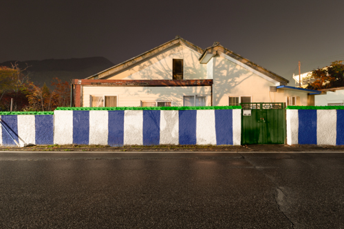
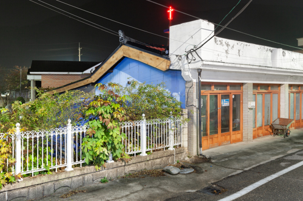
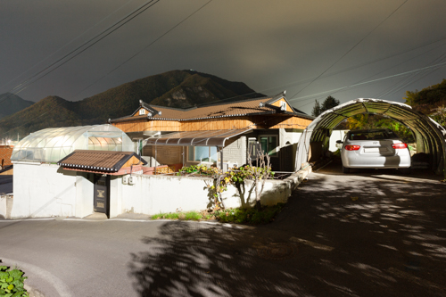
 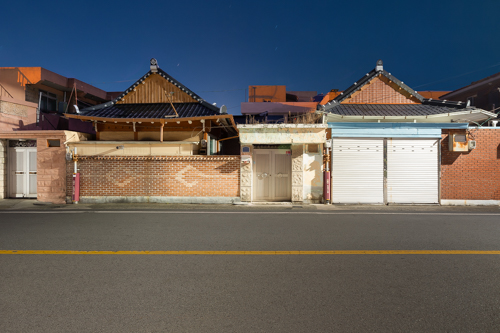
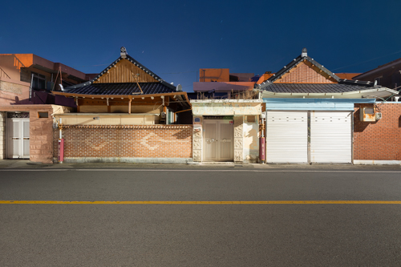


 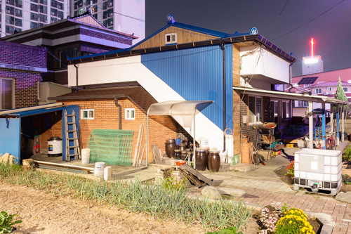
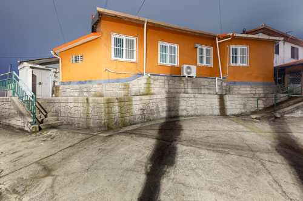
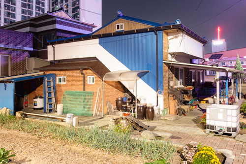
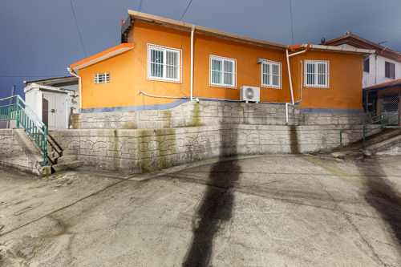
 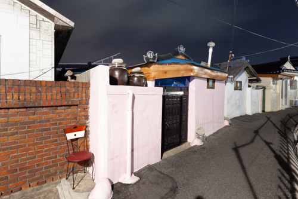
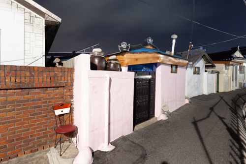

山道で見慣れない昆虫を一匹見かけた。腹がふくらみ、どこか毒々しく見えて、触れずに済んだのは幸いだった。調べてみると、うっかり触れると水疱ができ、跡が残るという。外来種だと思ったが、在来種らしい。中国産の赤いセミが大量に飛来していた頃の異物感を思い出した。
ホタルを見たのはこれまで二度。幼い頃、田舎の川辺に釣りについて行ったとき、力いっぱい灯りをともすように熱しては沈む、その光景が不思議で鮮明に覚えている。もう一度は民間人統制線の山あいで警備中だった時。ここにはいくらでもいるのだと思って通り過ぎたが、それ以来出会っていない。
都市から離れて暮らしていると目立たないだけで、世界的にはありふれた昆虫だという。にもかかわらず、私はホタルの姿形を判別できない。ただ、光るからわかるのだ。
ときどき通る道に、見たことのない建物が突然建っている。ピロティ構造で角張り、外皮は濃いグレーで、割れそうなほど艶やかだ。見慣れた出来事だ。突然さも、向かい側のそれと瓜二つなことも、ときに過剰に主張する様子も。位置が違わなければ区別できるだろうか。もはや昔の「赤い門の家」のような特別さで区別されることはない。どこかに貼られた建物の名前で見分けるだけだ。
古い住宅は、生きているように見える時がある。どれもそれぞれ顔を持ったように独立している。環境に適応し、反応し、増殖し、擬態する。ときに脱皮するかのように増築される。数が多く、古いがゆえに見慣れているのに、生態はわからない。ただ、光るからわかるのだ。
とりわけ興味深いのは、瓦屋根のかたちを借りる場合である。おそらく生き延びるための擬装のようなもの——見慣れない“在来種”になるための、彼らのやり方なのだろう。
- なし